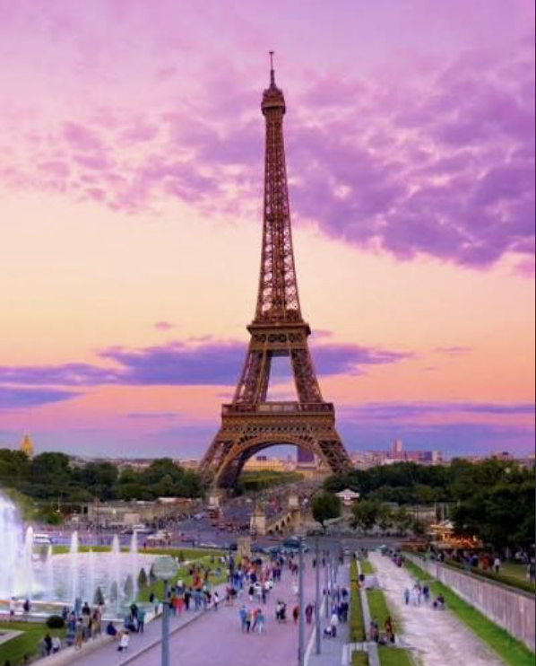

When the Eiffel Tower was built, it was not originally expected to remain in Paris forever. Gustave Eiffel had permission for the tower to stand for a limited period, and after about twenty years, ownership would pass to the city. There was a possibility that the structure could eventually be dismantled. However, the Eiffel Tower soon proved useful for more than tourism. Gustave Eiffel encouraged scientists to use the tower for experiments in areas such as meteorology and communications. Its enormous height made it especially useful for wireless telegraphy and radio transmissions. These practical uses helped demonstrate why keeping the tower could be valuable.
During the twentieth century, radio and television antennas were installed on the tower. As technology developed, the Eiffel Tower continued to play a role in communications. These additions also increased its total height beyond the approximately 300 meters of the original structure. At the same time, the tower became increasingly important as a symbol of Paris. What had once been criticized as an unattractive iron structure gradually became one of the most recognizable landmarks in the world. Images of the Eiffel Tower began appearing on postcards, posters, photographs, films, advertisements, and works of art.
The Eiffel Tower also became an inspiration for music. Songs were written about the famous monument, showing how it had become an important part of French culture.
Listen to a song inspired by the Eiffel Tower: GO TO the song
Today, millions of people visit the Eiffel Tower. Visitors can travel to different levels of the structure and look across Paris from high above the city. At night, the illuminated tower has become another famous part of the Paris skyline. The Eiffel Tower also represents an important achievement in the history of engineering. When it was completed in 1889, it demonstrated that engineers could construct structures on a scale that had previously seemed extremely difficult. It remained the tallest man-made structure in the world for more than forty years. More than 130 years after its construction, the Eiffel Tower continues to stand in Paris. A structure created for a nineteenth-century exhibition has become a permanent symbol of France. Its story shows how an experimental engineering project, which was once strongly criticized, can eventually become an important part of a city’s identity and cultural heritage.
